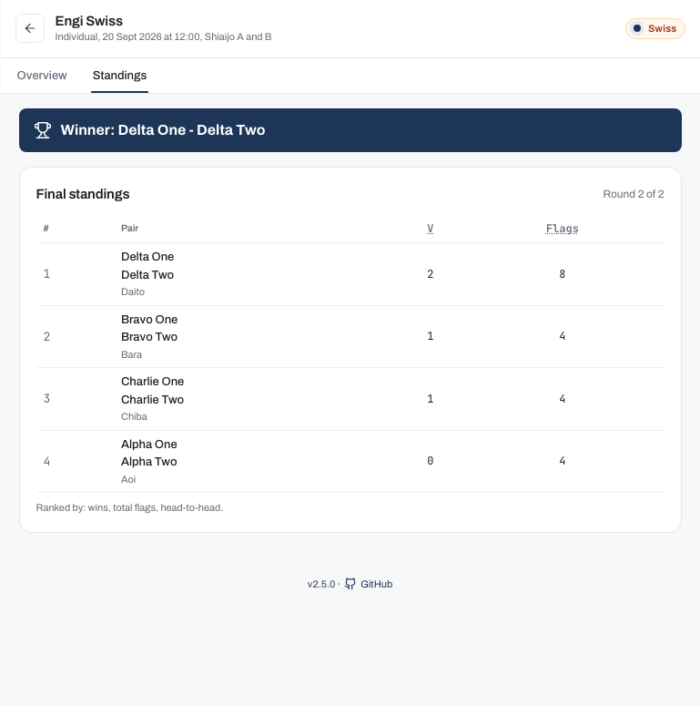

Engi (pair kata) competitions
Engi is a kata competition for pairs. Two competitors perform a set of choreographed forms together, and a panel of referees each raise a flag for the side they judge superior. It suits any kata competition judged that way: naginata engi-kyogi, kendo kata, jodo and other kata performed in pairs. Each side must be a pair, so a kata performed alone, such as iaido, cannot be entered as engi yet. It is scored entirely differently from a combat (shiai) bout: there are no ippon, no time on the clock, and no draws.
Turn it on
Tick Engi (kata competition) on the Add competition form or on an individual competition's Settings tab to switch its score editor to flag counting. It is offered for individual competitions only, works with every format (knockout, pools then knockout, league and Swiss), and is locked once the draw is generated.
Engi is its own setting, independent of Naginata competition. Ticking Naginata competition does two things: it adds the Sune ippon button, which engi bouts never use, and it unticks Award two joint 3rd places. That setting decides whether the division awards two joint 3rd places or a single one decided by a bronze match; refer to Third-place match. A naginata engi-kyogi division usually ticks Naginata competition as well, for the single 3rd place; for any other kata, set Award two joint 3rd places to your event's convention.
Quick-score and overrides are off for Engi
Because every Engi result comes from the flag editor, the kendo shortcuts, quick-score, manual winner overrides, kiken, fusenpai, and daihyosen are disabled for Engi competitions.
Add Engi pairs
An Engi competitor is a pair: two people from the same dojo or team, scored
together as one unit. There are no individual bouts inside a pair. Enter each
pair as a single participant row with both member names combined in the name
field, joined by a dash with a space on each side (-), and the shared dojo.
A row without both names is refused:
When the competition uses zekken names, the zekken column holds the pair's combined zekken the same way:
The two names display stacked on one side of the match. The pair counts as one entry in the draw and one line in the standings.
Score with flags
The score editor becomes a flag counter with one column per side, Shiro (white) on the left and Aka (red) on the right:
- Use the + and − buttons under each side, or the keyboard.
aadds a flag to Aka andsadds a flag to Shiro (either key works with or without Shift).Backspaceundoes the last flag you added, andEntersaves. - A bout's flags must total 1, 3, or 5. The panel is always an odd size, so there is always a majority and a bout can never end in a draw. The editor marks any other total and does not let you save it.
- The side with more flags wins the bout.
- Save result takes two taps, as Finish does in the kendo editor: the
first tap changes the button to Tap again to save, and the second tap
saves. On the court console the button reads Finish + Start Next
when another match of this competition waits on the court, and plain Finish
when none does; the first tap changes it to Tap again to finish and start
next, or Tap again to finish when no match waits.
A quick double tap only does the first.
Entersaves at once.
Standings
In Engi pools, leagues, and Swiss competitions, pairs are ranked by wins first, then by the flags they accumulated:
- Total wins.
- Total flags accumulated across all bouts, as the tie-break when wins are equal.
Both the winning and the losing side's flags count toward that side's own tally. A pair that loses by three flags to two still keeps its two flags.
Ties between pairs
Engi pools and leagues follow the same tie rule as ippon-scored pools and leagues. Two pairs that are level on wins and on flags are tied, and the tie rule says which ties get a tie-break bout:
- League: a tie for 1st or 2nd place always gets a tie-break bout. A tie for 3rd place gets one only when Award two joint 3rd places is off; with it on the pairs share 3rd. Ticking Naginata competition turns it off, so a naginata engi-kyogi division usually has it off. A tie for 4th place or lower shares its place.
- Pools: a tie gets a bout only when it decides who goes through or where the pairs are seated. Any other tie shares its place.
The tie-break bout opens in the same flag editor as any Engi bout, and the pair with more flags wins it. Because a bout's flags always total 1, 3, or 5, a tie-break between two pairs can never end level. If three or more pairs are level and the round goes in a circle, the Pools tab (League in a league) offers another round or lots, exactly as for kendo competitors, and the lots are drawn and entered by you. Refer to Recording decisions. Name order never decides a place that counts.
Quick-score, kiken, fusenpai, and daihyosen stay off for Engi, so a tie-break bout is always scored by flags. With kiken and fusenpai off, the app records no withdrawal for an Engi pair, so a tie-break whose two sides both withdrew does not arise.
Swiss standings
Swiss does not follow the tie rule. A Swiss ranking still tied after wins and flags is settled by:
- Head-to-head: when two pairs are tied on wins and flags, the pair that won their direct bout ranks higher.
- Name order (alphabetical by the pair's first listed member), when wins, flags and head-to-head are all equal.

Excel exports
Both Excel downloads on the competition page (refer to Export and print) understand Engi:
- Each pair is a single competitor throughout both workbooks. The data sheet
lists the combined pair name under Player Name with the shared dojo. Every
sheet that shows the pair (pool draw, match grids, standings, bracket
pages, and the printable name sheets) shows both members together on one
line as
Member 1 - Member 2. - Pool standings in both workbooks use the Engi columns: W (wins), Flags (total flags), and Rank. Losses are not recorded because ranking is determined by wins then accumulated own-side flags. The kendo points columns do not appear.
- The results workbook records each side's referee flag count in the score cells instead of ippon letters. A bout recorded without flags leaves the score cells blank with the decision marked in the centre column.